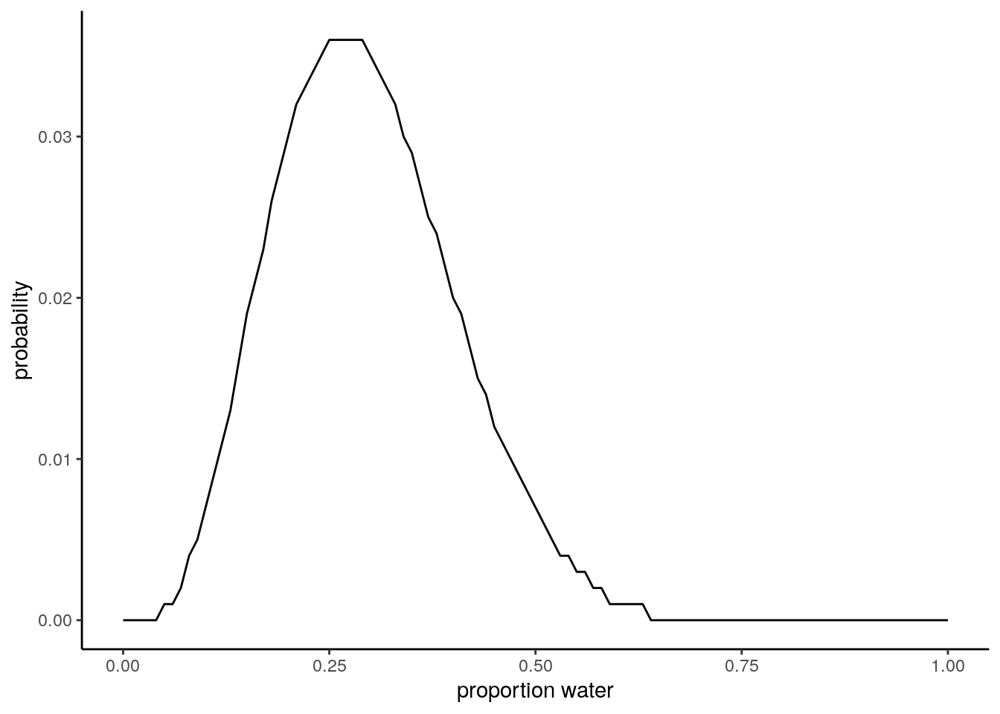

Homework - Week 01
Question 1: Suppose the globe tossing data (Lecture 2, Chapter 2) had turned out to be 4 water and 11 land. Construct the posterior distribution.
# define how many tosses were W & L
w <- 4
l <- 11
# define p, every 0.01 between 0,1
p <- seq(0, 1, by = 0.01)
# function to compute posterior by every p
compute_posterior <- function(W, L, poss){
ways <- sapply(poss, function(q) (q*4)^W * ((1-q)*4)^L)
post <- ways/sum(ways)
data.frame(poss, ways, post = round(post,3))
}
# compute posterior for our data
posterior <- compute_posterior(w, l, p)
# visualize posterior
ggplot(data = posterior) +
geom_line(aes(poss, post)) +
theme_classic() +
xlab("proportion water") +
ylab("probability")